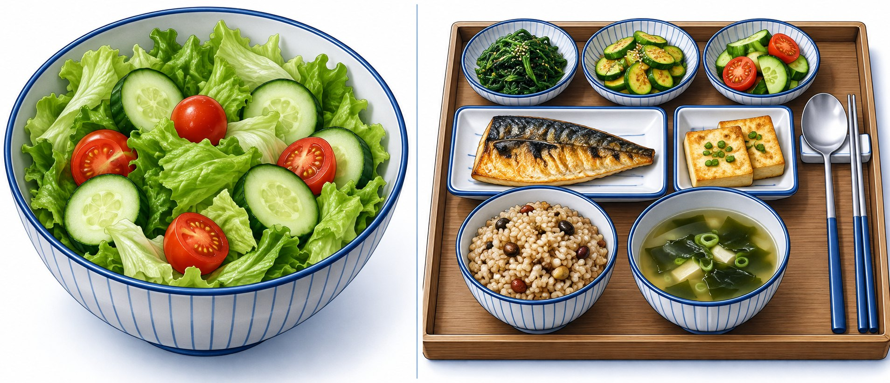
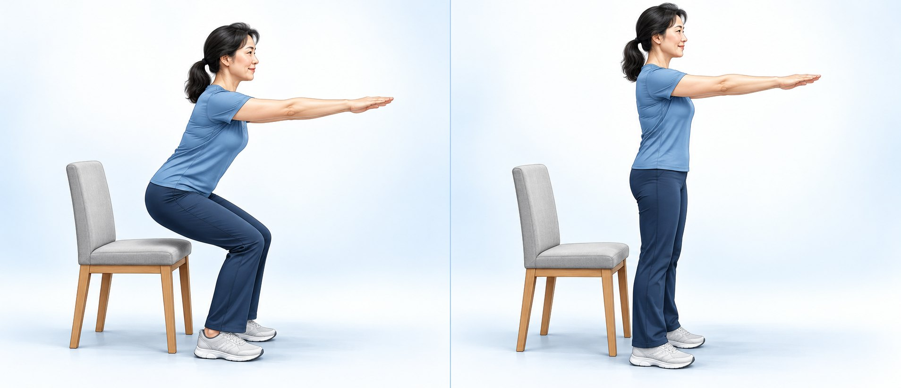

내 숫자는 어디에 있나요 — 당화혈색소(HbA1c)
| 구분 | 정상 | 당뇨 전단계 ← 지금 여기 | 당뇨 · 다른 날 재확인 |
|---|---|---|---|
| 당화혈색소2~3개월 평균 | 5.6% 이하 | 5.7~6.4% | 6.5% 이상 |
| 공복혈당 mg/dL | 100 미만 | 100~125 · 생활 관리가 기본 | 126 이상 |
 대개 약을 안 쓰는데 왜 알려 드릴까요 — 이유는 두 가지
대개 약을 안 쓰는데 왜 알려 드릴까요 — 이유는 두 가지
① 당뇨로 넘어가는 분이 많습니다
그대로 두면 해마다 100명 중 5~10명이 당뇨로 넘어갑니다. 넘어가지 않는 쪽에 들도록 지금 시작합니다.
② 당뇨는 증상 없이 서서히 옵니다
처음엔 증상이 거의 없어 "그러려니" 합니다. 당뇨가 와도 모르고 지내면 그사이 합병증 위험이 커져 꼭 확인합니다.
 하지 말 것 vs 이렇게 하세요
하지 말 것 vs 이렇게 하세요
| 많이 하시는 실수 — 하지 마세요 | 이렇게 하세요 |
|---|---|
| 굶기 · 끼니 거르기굶고 나면 몰아서 먹기 쉽고 오래 못 갑니다. | 제때, 탄수화물·단백질·지방을 골고루샐러드만이 아니라 밥·생선·두부·채소를 함께. |
| 탄수화물을 아예 끊기끊기보다 적당량을 먹고 종류를 바꾸세요. | 빵·떡·면을 줄이고 잡곡·채소·콩으로흰 밀가루·흰 쌀로 만든 음식을 바꿉니다. |
| 걷기 같은 유산소만근력운동은 인슐린(혈당 낮추는 호르몬)이 잘 듣게 합니다. | 엉덩이·허벅지 근력운동 주 2~3회+ 빠르게 걷기 같은 중간 강도 운동 주 150분 이상 |

샐러드만 ✕골고루 한 접시 ○

① 의자 앞에서 천천히 앉기② 엉덩이 힘으로 일어서기
과체중·비만인 분은 지금 체중의 5~7%(70kg이면 3.5~5kg)를 몇 달에 걸쳐 천천히 빼세요. 7% 감량과 중간 강도 운동 주 150분을 함께 한 연구에서 당뇨로 넘어간 사람이 절반 넘게 줄었습니다.
적어도 1년에 한 번 다시 봅니다. 정확한 시기는 진료 때 알려 드립니다.
소변이 잦고 목이 마르거나 이유 없이 살이 빠지면 기다리지 말고 진료를 받으세요.